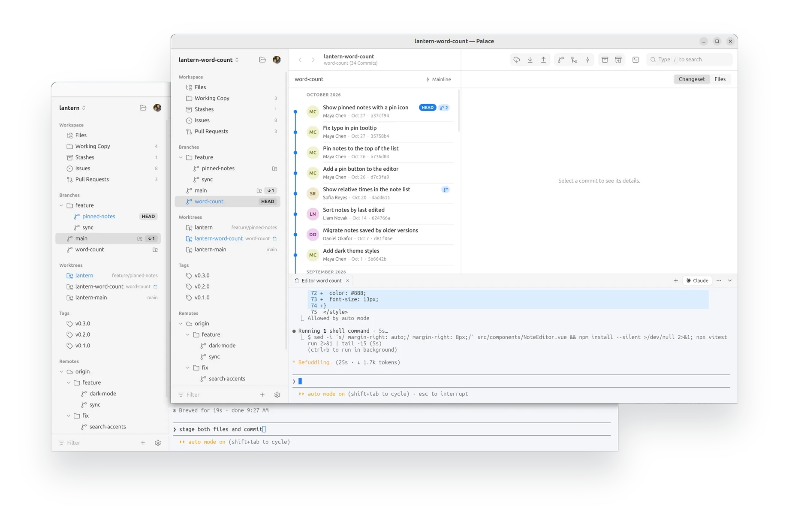

Run your agent. Review its work. Ship it.
Your agent writes the code. Palace shows you what changed. You decide what gets shipped.
Palace is for macOS and Linux. There's no Windows version yet.
Free and open source · For macOS and Linux · No sign-up · Source on GitHub
Other platforms: macOS · Linux .deb · AppImage
Why Palace
When your agent writes the code, your job changes.
You spend less time typing and more time steering, reading diffs and deciding what to commit. Most tools weren't built for that: the Git client, the editor and the terminal live in separate windows, and you glue them together yourself.
Palace isn't an IDE, and it's more than a Git client: it's a workbench for reviewing and shipping what your agent writes.
There's no autocomplete, debugger or plugin system. If your agent does most of the writing, you may not miss them.
Agents
Your agent, right beside your repository.
Palace works with Claude Code, Codex, Gemini CLI and other agents that run in a terminal. Open an agent tab and it starts in the repository you're looking at. As it works, its changes appear in the Working Copy, ready to review.
- Set the command each repository's agent tab runs, such as Claude Code without permission prompts.
- Know when your agent is done. Claude Code's tab shows when it's working, finished or waiting on you, and Palace lets you know if you're looking elsewhere.
- Drop a screenshot or any file on the terminal, and its path goes into your agent's prompt.
- The terminal opens on your agent. Ctrl+Shift+T (⌘T on a Mac) adds a shell tab for your test runner or dev server, which keeps running while you look at another repository.
Review
Review every line before it's committed.
See exactly what changed, then stage, unstage or discard whole files, single chunks or individual lines. Keep what your agent got right, and turn a busy session into clean, focused commits.
- Discarding a whole file moves it to the Trash, not into the void.
- Write the message, commit, or amend the last commit in place.
- Changed your mind? Ctrl+Z undoes a commit, discard, merge, rebase or reset, and puts back exactly what it changed.
- Stash everything or just selected files, then apply or drop them from the Stashes view.
See what your agent changed before it's committed.
Files
Make the small fixes yourself.
Browse the working copy and edit any file in place, for the touch-ups between your agent's changes. It's not an IDE, on purpose: no plugins to manage and nothing to configure.
- Syntax highlighting, with each changed line marked since the last commit; click a mark to see or revert what was there.
- Ctrl+P finds any file, including new ones Git doesn't track yet.
- Preview Markdown as it reads on GitHub, with tables, task lists and your repository's images.
- Saving keeps line endings and permissions, and won't overwrite a file changed on disk since you opened it.

Windows
Several agents at once.
Describe a task, and New Agent Task makes a branch for it in a worktree of its own and opens it in a new window, with your agent already working on it. Start several, and they work side by side without getting in each other's way.
- Worktrees shows every worktree's agent at a glance: working, finished, or waiting on you. Click one to go to it.
- Open a window for any repository with Ctrl+N (⌘N on a Mac), each with its own agent and terminals. Opening one that's already open brings its window forward.
- Closing a window or quitting with work in progress, a busy terminal or an unsaved file, asks first and says what's at stake.
History
See your whole history.
Every commit on a clear branch graph, grouped by month. View HEAD or any branch, remote branch, tag or stash.
- Each commit leads with its message, then who wrote it, with its co-authors (Claude by its own icon), and a diff for every changed file.
- / or Ctrl+F searches files and commits together, by message, author or hash.
- Browse any commit's file tree, see a file's history, and blame it line by line.
- Busy history with dozens of branches? Mainline shows each merge as one commit, in a straight line.
Branches
Merge, rebase and rewrite with a drag.
Drag a branch onto HEAD to merge it, or hold Alt to rebase onto it. Drag commits to reorder them and squash several into one, without an editor full of pick lines.
- Resolve conflicts one block at a time: take the current side, the incoming side or both, or decide for the whole file.
- Compare any two branches or tags: see the commits one has that the other doesn't, and every change it would bring.
- Drag commits from another branch onto yours to cherry-pick them, and revert and reset from a right-click.
- Create, rename, delete and publish branches — a new branch can go to the remote straight away.

GitHub
Issues and pull requests, next to your code.
Sign in to GitHub, and the repository's issues and pull requests are right there in the sidebar. No browser tab to keep open.
- Filter by label, assignee, reviewer or author, and search titles and descriptions.
- Read and write comments in Markdown, edit labels and assignees, and close or reopen.
- Create a pull request from a branch, see whether it can be merged, and merge it with a merge commit, a squash or a rebase.
Under the hood
Real Git underneath.
Palace runs your own git for every change. Nothing is reimplemented, so nothing behaves differently.
- Your hooks and commit signing run on every commit.
- Your SSH agent and credential helpers handle remotes.
- Your
.gitconfigapplies, exactly as it does in the terminal.
No telemetry. Palace itself only contacts GitHub: for updates, profile pictures, and your issues and pull requests. Git talks to your remotes, as it always does.
Your GitHub token, if you sign in, is kept in your system's keychain.
And more
Everything else, done carefully.
Fast and small
A native Rust core, not Electron. Large histories load quickly and page in as you scroll.
Live refresh
Changes your agent makes, or you make anywhere else, show up immediately.
Light and dark themes
A clean light theme and a blue-gray dark theme. Diffs have a colorblind-friendly option.
Keyboard friendly
Arrow keys move through files and commits; Back and Forward retrace your steps.
Nothing lost
Commits a branch loses, as to an agent's git reset --hard, are offered back in a click.
Fetch, pull and push
One click each, with live progress and Cancel. Pull with merge or rebase; force push when you need it.
Tags and remotes
Create, push and delete tags. Add, rename and remove remotes. Delete remote branches.
GitHub account
Sign in to browse and clone your repositories, create new ones and manage SSH keys. Shows authors' profile pictures.
Automatic updates
Palace checks GitHub for new releases, installs them, and reopens your windows as they were.
Get Palace
Free, open source, and MIT licensed. Version 0.40.1.
Palace is for macOS and Linux. There's no Windows version yet.
macOS
macOS 11+, Apple silicon and Intel
Open the .dmg and drag Palace to Applications.
Ubuntu, Debian, Mint, Pop!_OS, elementary
.deb package
$ sudo apt install ./Palace_*.deb
Installs Git for you if it's missing.
Download .debAny other Linux
AppImage
$ chmod +x Palace_*.AppImage $ ./Palace_*.AppImage
Requirements
Git, plus libfuse2 on Ubuntu 22.04 and later (libfuse2t64 on 24.04 and later).
First use
Reviewing your agent's work
Open a repository.
Open any folder that's a Git repository, or clone one of yours from GitHub.
Start your agent.
Open the terminal and Claude Code starts in that repository, or Codex, Gemini or another agent you choose. If it isn't installed, Palace offers its installer.
Review and commit.
Changes appear in the Working Copy as your agent works. Stage what's right, discard what isn't, and commit.
Run your agent. Review its work. Ship it.
Already using Palace? A star on GitHub helps other developers find it.